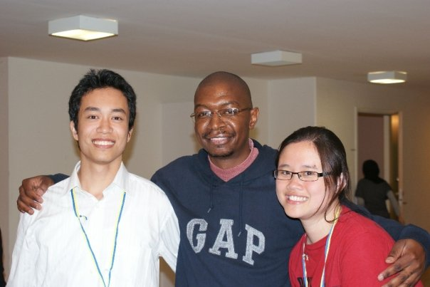

I am investigating and also practicing software entrepreneur methodologies, including Lean Startup, Agile development, Global Software Development and Open Source Ecosystem.
I have been investigated different case studies during last five years. The studies have been performed in companies with different sizes, application domains and maturity levels in USA, Vietnam, Japan, Norway and Germany.
Case study 1: Company A is actively particpating in adopting Open Soure Software (OSS) components and services. A needs supports on deciding a suitable OSS-based business model while considering influences of OSS communities, other companies in the ecosystem and market.
Case study 2: Company B recently decided to outsource their implementation and testing activities to different geographical and time zone locations. B needs supports on deciding what, when, how to distribute different tasks to these locations, and mechanism to integrate them.
Case study 3: Company C and Company D have worked together in a contracted software development project. Both of the companies need to have a plan that not only faciliates technical collaboration among developers, but also remains competition's abilities toward the other.
Case study 4: Company E is working on a legacy project with partipation of other companies, free lancers and client organizations. Code is stored in Git, SVN and other physical storages. They need to define coordination mechanisms for these heterogeneous group with different development infrastructure and practices.
Case study 5: Company F recently hire a new program manager F1 in a large-scale on-going, multiple-partner software projects. F1 needs to quickly understand communication and task flow, levels of escalation, and suitable management strategies to developers, 3rd parties and other partners.
Case study 6: Company G maintain different codebases for different platform versions of a software. The codebases are getting larger with duplication and technical debts. G needs to understand which part of different codebases need to be merged, when and how.
Since 2006, I have been working on different desktop, web and mobile application in software developmenet, enterprise planning and information system.
Since 2006, I have been involved in various types of software development, research and entrepreneur activities
Researcher at IDI, NTNU, Norway. Focus on on challenges and practices of current USA & European software startups.
8-months research internship in Avaya, New Jersey. Focus on cross-platform software development
4-year Ph.D stipend at IDI, NTNU, Norway. Focus on global software development and team coordination.
4-year Ph.D stipend at IDI, NTNU, Norway. Focus on Company particpation on OSS
6-month research assistance at Fraunhofer IESE, Germany. Focus on implementing cloud-based prototypes and software quality modelling
2-year working at G8 JSC, Hanoi, Vietnam. Partipation in all type of software development activities
1. Nguyen Duc, A., Cruzes D.S. and Conradi, R. (2015). The impact of global dispersion on coordination, team performance and software quality A systematic literature review. Information and Software Technology, 57, 277-294
2. Nguyen Duc, A., Mockus, A., Hackbarth R., and Palframan, J. (2015). Longitudinal case study of coordination in multiple platform development, Empirical Software Engineering.
3. Nguyen Duc, A., Mockus, A., Hackbarth R., and Palframan, J. (2014). Forking and coordination in multi-platform development: a case study. In the Proceedings of The ACM / IEEE International Symposium on Empirical Software Engineering and Measurement (ESEM), Torino, Italy
4. Nguyen Duc, A., Cruzes D.S. and Conradi, R. (2014). On the role of boundary spanners as team coordination mechanism in organizationally distributed projects, In the Proceedings of 9th IEEE International Conference on Global Software Engineering (ICGSE), Shanghai, China
5. Nguyen Duc, A. and Cruzes D. S. (2013). The influence of organizational distance on technical coordination An exploratory study. In the Proceedings of 8th IEEE International Conference on Global Software Engineering (ICGSE), Bari, Italy
6. Nguyen Duc, A., Cruzes D.S. and Conradi, R. (2012). Dispersion, coordination and performance in global software teams: a systematic review. In the Proceedings of The ACM / IEEE International Symposium on Empirical Software Engineering and Measurement (ESEM), Lund, Sweden
7. Anh Nguyen, D., Daniela, S. C., and Reidar, C. (2012). Competition on inter-organizational collaboration from an organizational-social-technical perspective. In the Proceedings of the 5th International Workshop on Co-operative and Human Aspects of Software Engineering, Zurich, Switzerland
8. Ayala, C. P, Cruzes D. S., Nguyen Duc, A., Conradi, R., Franch X., Host M. and Muhammad A. B. (2012). OSS Integration Issues and Community Support: An Integrator Perspective. In the Proccedings of Open Source Software Conference (OSS), Hammamet, Tunisia
9. Nguyen Duc, A., Cruzes D. S., Conradi, R., Host M., Franch X. and Ayala, C. P. (2012). Collaborative Resolution of Requirements Mismatches When Adopting Open Source Components. In the Proceedings of 18th International Working Conference on Requirements Engineering: Foundation for Software Quality, Essen, Germany
10. Nguyen Duc, A., Cruzes D. S., Ayala C. P. and Conradi, R. (2011). Impact of Stakeholder Type and Collaboration on Issue Resolution Time in OSS Projects. In the Proccedings of Open Source Software Conference (OSS), Salvador, Brazil
11. Nguyen Duc, A., Cruzes D. S., Reidar, C., and Claudia, A. (2011). Empirical validation of human factors in predicting issue lead time in open source projects. In the Proceedings of the 7th International Conference on Predictive Models in Software Engineering, Banff, Alberta, Canada
12. Nguyen Duc, A., and Ciolkowski, M. The Impact of Design Complexity onSoftware Quality - A Meta Analysis (2010). In the Proceedings of IWSM/ MetriKon/ Mensura, Stuttgart, Germany
Have any question? Just send a message.